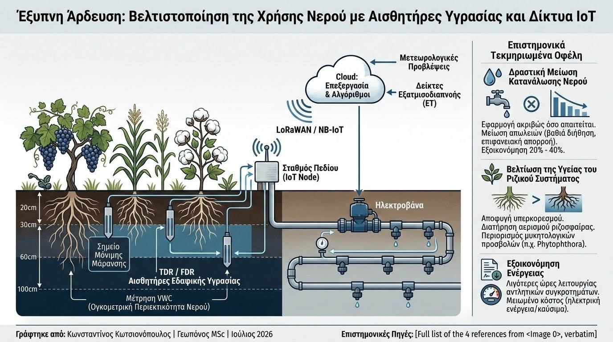

Η κλιματική κρίση και η αυξανόμενη λειψυδρία καθιστούν την ορθολογική διαχείριση του νερού την κορυφαία πρόκληση για την παγκόσμια γεωργία. Παραδοσιακά, οι αποφάσεις για την άρδευση βασίζονταν σε εμπειρικές παρατηρήσεις ή σταθερά χρονικά προγράμματα, οδηγώντας συχνά σε σπατάλη πόρων ή σε συνθήκες ασφυξίας των ριζών. Η σύγχρονη απάντηση έρχεται από την Έξυπνη Άρδευση (Smart Irrigation), μια προσέγγιση που βασίζεται σε δεδομένα πραγματικού χρόνου και αυτοματοποιημένα δίκτυα λήψης αποφάσεων.
Στον πυρήνα της τεχνολογίας αυτής βρίσκονται οι αισθητήρες εδαφικής υγρασίας, οι οποίοι τοποθετούνται σε διαφορετικά βάθη εντός της ριζοσφαίρας. Οι πιο αξιόπιστοι αισθητήρες χρησιμοποιούν μεθόδους μέτρησης της διηλεκτρικής σταθεράς του εδάφους, όπως η Ανακλαστικότητα Χρονικού Πεδίου (TDR) και η Ανακλαστικότητα Συχνικού Πεδίου (FDR). Οι συσκευές αυτές προσδιορίζουν με ακρίβεια την ογκομετρική περιεκτικότητα σε νερό (VWC), επιτρέποντας στον γεωπόνο να γνωρίζει πότε το έδαφος πλησιάζει στο Σημείο Μόνιμης Μάρανσης ή πότε βρίσκεται στη βέλτιστη Υδατοικανότητα Αγρού.

Η διασύνδεση των αισθητήρων αυτών επιτυγχάνεται μέσω του Internet of Things (IoT). Χρησιμοποιώντας ενεργειακά αποδοτικά πρωτόκολλα ασύρματης επικοινωνίας μεγάλης εμβέλειας, όπως το LoRaWAN ή το NB-IoT, οι σταθμοί πεδίου μεταδίδουν τις μετρήσεις σε μια κεντρική πλατφόρμα (Cloud). Εκεί, εξειδικευμένοι αλγόριθμοι συνδυάζουν τα εδαφικά δεδομένα με μετεωρολογικές προβλέψεις και δείκτες εξατμισοδιαπνοής (ET), δίνοντας εντολή σε ηλεκτροβάνες για την αυτόματη έναρξη ή διακοπή του ποτίσματος.
Τα επιστημονικά τεκμηριωμένα οφέλη της έξυπνης άρδευσης περιλαμβάνουν:
- Δραστική Μείωση Κατανάλωσης Νερού: Η εφαρμογή του νερού ακριβώς στην ποσότητα και τον χρόνο που απαιτείται μειώνει τις απώλειες λόγω βαθιάς διήθησης ή επιφανειακής απορροής, επιτυγχάνοντας εξοικονόμηση υδάτινων πόρων από 20% έως και 40%.
- Βελτίωση της Υγείας του Ριζικού Συστήματος: Αποτρέποντας τον υπερκορεσμό του εδάφους, διατηρείται η απαραίτητη ισορροπία αερισμού στη ριζοσφαίρα, περιορίζοντας την ανάπτυξη μυκητολογικών προσβολών των ριζών (π.χ. από Phytophthora).
- Εξοικονόμηση Ενέργειας: Λιγότερες ώρες λειτουργίας των αντλητικών συγκροτημάτων μεταφράζονται άμεσα σε μειωμένο κόστος ηλεκτρικής ενέργειας ή καυσίμων για τον παραγωγό.
Η μετάβαση στην άρδευση ακριβείας αποτελεί θεμέλιο λίθο της βιώσιμης εντατικοποίησης της γεωργίας. Για τη σύγχρονη γεωπονική πράξη, η ενσωμάτωση δικτύων IoT και η ψηφιοποίηση των υδραυλικών παραμέτρων του εδάφους δεν προσφέρουν μόνο οικονομικά πλεονεκτήματα, αλλά διασφαλίζουν τη βιώσιμη προστασία των πολύτιμων φυσικών πόρων για το μέλλον.